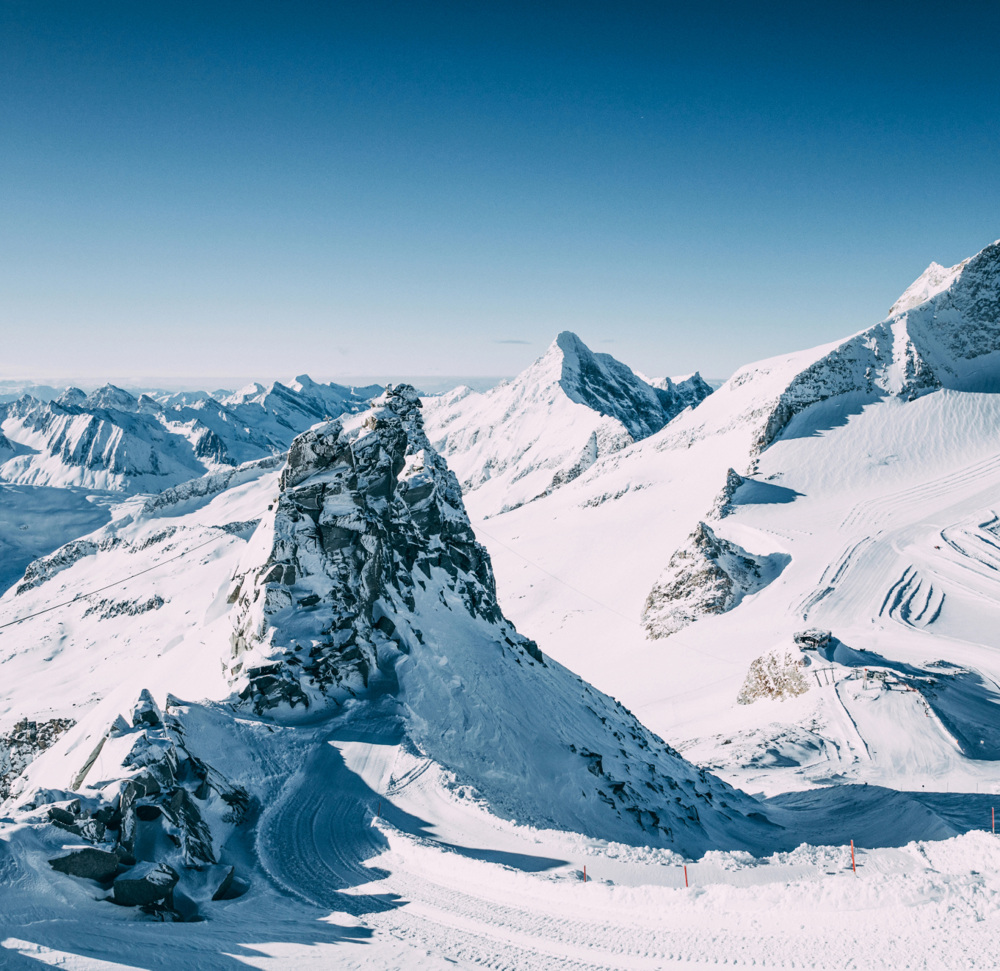
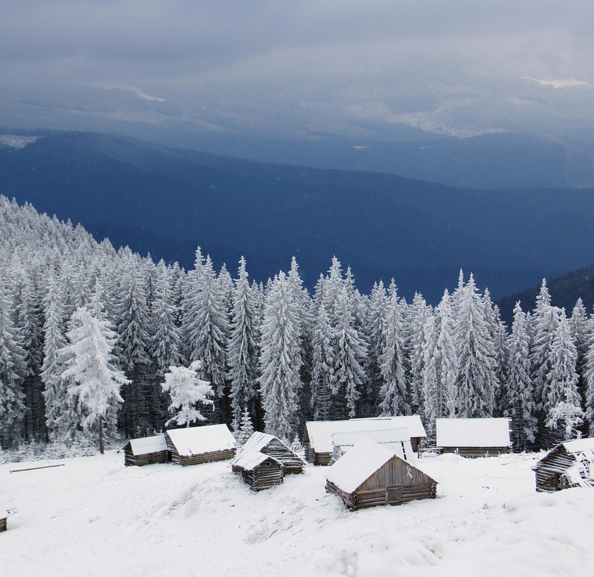
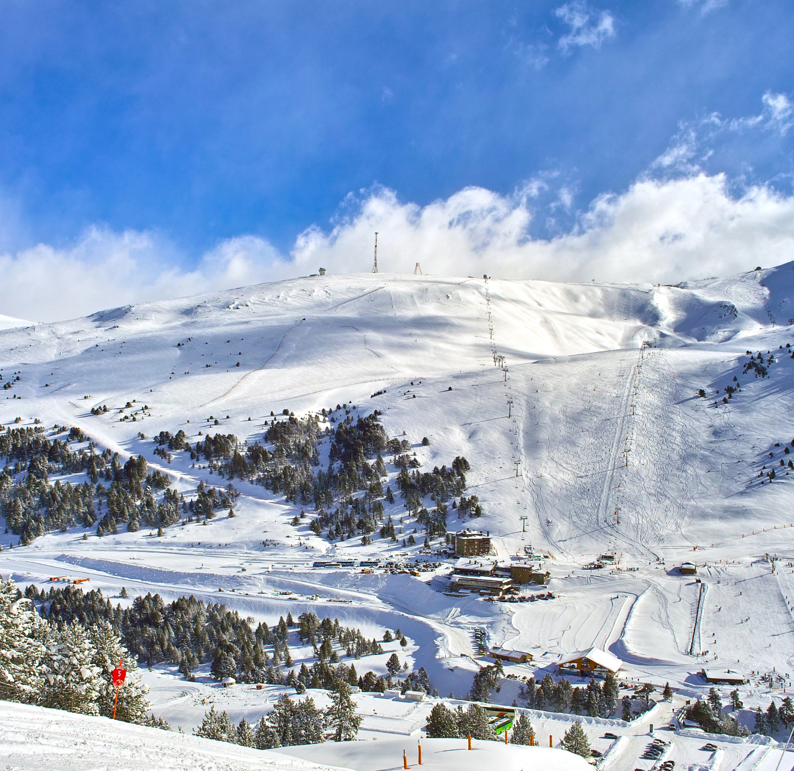

ЛЫЖНЫЕ КУРОРТЫ
Горнолыжные курорты со всего мира привлекают тех, кто ценит активный отдых на свежем воздухе и живописные природные пейзажи. От величественных Альп до живописных Карпат, они предлагают уникальные возможности для катания на лыжах и сноуборде. Каждый регион обладает своей атмосферой и особенностями. Благодаря современной инфраструктуре, первоклассным отелям и разнообразию развлечений, такие курорты становятся отличным выбором как для профессионалов, так и для новичков.
Горнолыжный отдых сочетает активность, наслаждение природой и отдых от городской суеты. Вот что делает его особенно привлекательным:
Физическая активность: Лыжи и сноуборд не только укрепляют тело, но и способствуют улучшению координации, сохраняя физическую форму зимой.
Чистый воздух и природа: Курорты расположены в экологически чистых местах с прекрасными видами на заснеженные горы, что создаёт чувство единения с природой.
Релакс и отдых: После активного дня можно расслабиться в шале, посетить спа или попробовать местные блюда. Многие курорты предлагают целый спектр оздоровительных и развлекательных услуг.
Множество активностей: Помимо лыж и сноуборда, доступны такие развлечения, как катание на санках, коньках, или прогулки по снегу, а для искателей приключений – даже полеты на вертолете.
Подходит для всех: Благодаря разнообразию трасс, курорты подходят как для новичков, так и для опытных спортсменов. А школы с инструкторами помогают освоить навыки катания.
Зимняя атмосфера: Горные курорты превращаются в настоящую зимнюю сказку, особенно в праздничный сезон, создавая незабываемую атмосферу с теплыми шале и заснеженными пейзажами.
ЛУЧШИЕ ЛЫЖНЫЕ КУРОРТЫ
ALPS

Альпы — одно из самых популярных мест для катания на лыжах, которое простирается через несколько стран: Францию, Швейцарию, Италию и Австрию. Каждый регион имеет свои особенности, но общее для всех — это высококачественные курорты и бесконечные возможности для катания. Помимо идеальных условий для лыжников и сноубордистов, Альпы предлагают широкий спектр других зимних активностей, включая катание на санках, прогулки на снегоступах, сноукайтинг и альпинизм.
Украинские Карпаты — это одно из самых живописных и привлекательных мест для зимнего отдыха на территории Украины. Этот горный массив, расположенный на западе страны, известен своими уникальными природными ландшафтами, чистым воздухом и обилием возможностей для активного отдыха. Горнолыжные курорты Карпат становятся всё более популярными среди туристов, как из Украины, так и из-за рубежа, благодаря доступным ценам, разнообразию трасс и неповторимой атмосфере украинских гор. Это идеальное место для тех, кто ищет сочетание активного отдыха и спокойствия, вдали от шума больших городов.

UKR CARPATHIAN
ANDORRA

Андорра — это небольшое княжество, расположенное в Пиренейских горах между Францией и Испанией, которое стало одним из популярных европейских направлений для зимнего отдыха. Несмотря на свои скромные размеры, страна предлагает первоклассные горнолыжные курорты и живописные пейзажи, привлекая туристов со всего мира. Андорра известна не только своими идеальными условиями для катания на лыжах и сноуборде, но и благоприятным климатом, высокими стандартами сервиса и развитой инфраструктурой.
Польские Карпаты — это горная система, расположенная на юге Польши, которая является популярным направлением для зимнего отдыха и горнолыжного спорта. Карпаты в Польше протянулись через несколько регионов, предлагая туристам уникальные природные пейзажи, чистый воздух и множество возможностей для активного отдыха. Польские Карпаты — это идеальное место для тех, кто хочет провести зимний отпуск с семьей или друзьями, наслаждаясь катанием на лыжах, сноуборде или просто отдыхом на природе.
PL CARPATHIAN